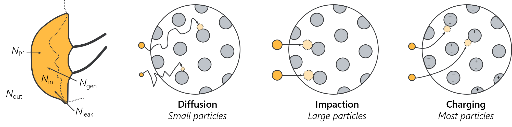

Filtration versus pressure drop
This viz examines the filtration properties of common materials, using the data from Rogak et al.. Filtration and pressure drop are two of the most important properties of face masks. Filtration occurs as a result of several mechanisms, including impaction, interception, diffusion, and electrostatic diffusion. Impaction tends to dominate for larger particles, while diffusion is most significant for smaller particles. Charges in the masks can enhance particle filtration.
Pressure drop, in contrast, denotes resistance. Lower pressure drops are preferable, to allow for a more breathable mask and results in less leakage around the mask. A good mask has a balance of both of these properties. The following plot considers there properties for some common materials. Uncertainties are generally larger for low fitration efficiencies (negative filtration filtration efficiencies occasionally reflect this). Materials are coded according to their structure.
In the plot below, dashed lines correspond to line of constant quality, using the natural number as a base ane pressures in kPa. A good quality denotes a hybrid of good filtration while maintaining a lower pressure drop. For material codes, the first component denotes the material structure, such as nW for non-woven; followed by an optional x* code to denote if multiple layers were used during the test (e.g., x2 for two layers of the material); and finally an optional code denoting if a treatment was applied to the mask (i.e., HS for heat treatment, IPA for isopropyl alcohol treatments, WD for laundering, and SW for washing with soap and water).